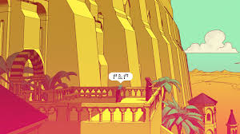

Olá pessoas, então Chants of Sennaar é um jogo multiplataforma no formato puzzle. O jogo é basicamente uma torre de babel que para ir subindo nos níveis da torre você precisa descriptografar a linguagem da sociedade que vive em cada nível. Recentemente zerei esse jogo pela segunda vez, e sim, com um olhar mais minuncioso para analisar a importancia da língua com aspectos sociais e comportamentos de cada sociedade. Fiquei tão interessado que pesquisei mais sobre a filosofia por trás da escrita e linguagem. Achei surpreendente o jeito que o jogo aborta esse tema. E eu entusiasta da linguagem resolvi fazer um post a respeito desse jogo. Espero com esse post convencer pessoas do meu ciclo a jogar e ter uma experiencia impar, como a que eu tive.

Chants of Sennaar
O jogo nasce do mito da Torre de Babel: a humanidade, antes unida, é fragmentada pela diversidade de línguas. Em Chants of Sennaar, isso não é só pano de fundo: é o próprio motor da história. O jogador é um viajante anônimo que percorre uma torre, onde cada andar é habitado por um povo diferente, com cultura, estética, arquitetura e língua própria.
A jogabilidade é um espelho da temática:
Você observa pictogramas e símbolos, tenta decifrar contextos e significados. Tudo é construído por inferência, tentativa e erro, associação visual e contexto social. O jogo não coloca o jogador como herói bélico ou político, mas como mediador linguístico. O poder não vem da espada, mas da palavra. (Uma proposta bem diferente em jogos de puzzle)
A torre funciona em vários níveis: Histórico: Cada andar pode ser visto como um estágio cultural de sociedades com papeis e pensamentos diferentes. Político: Cada povo é fechado em si, e a linguagem funciona como barreira. Filosófico: Múltiplas visões de mundo coexistindo sem diálogo.

Filosofia por trás
Jogar Chants of Sennaar foi, pra mim, quase como cair num espiral de filosofia da linguagem, lugar que eu até que to um pouco acostumado. (Lógica computacional, o filme A chegada, minha amiga antropologa Theodora). Não é só sobre decifrar símbolos bonitinhos em paredes, é sobre entender como a linguagem estrutura a vida em sociedade. Vou te contar como eu vi isso na prática, e depois que eu estudei alguns reviews desse jogo, separei alguns filosofos que falam um pouco sobre a filosofia da linguagem que foi aplicada nesse jogo.

Wittgenstein
Em Chants of Sennaar, não existe um dicionário mágico que traduz tudo. Você aprende na marra: observando como as palavras são usadas em conversações específicas. Aí que entra Wittgenstein: “O significado de uma palavra é o seu uso na linguagem.” No jogo, você só entende que aquele símbolo significa “porta” quando alguém aponta pra porta e usa o termo. É puro jogo de linguagem regras sociais que só fazem sentido quando você entra no rolê.
Review do jogador tefinha gamer:
 Sim tefinha, eu concordo!
Sim tefinha, eu concordo!
Sapir-Whorf:
A cada andar da torre eu pensava: Essa galera vive num mundo completamente diferente só por causa da língua. E não é exagero: as crenças, os rituais, até a rigidez social de cada grupo parecem refletir diretamente na gramática e nos símbolos deles. Nesse ponto entra a hipótese Sapir-Whorf: a ideia de que a língua molda a forma como você percebe o mundo.

De fato, é incrível os devs pensaram em toda uma lógica linguistica, embora as comunicações não se aprofundem tanto, a ponto de tratar coisas mais complexas e definições mais minunciosas. No que o jogo se propõe é de fato uma arquitutura morfólogica incrível!!!
Bakhtin
O mais louco é perceber que você nunca traduz só uma palavrinha isolada. Quando eu descobria um termo, ele vinha carregado com toda a visão de mundo daquela comunidade. É bem Bakhtin: as palavras são sempre vozes coletivas, nunca neutras. Eu não estava só montando um dicionário, estava traduzindo cosmovisões inteiras. (Isso é bizarro quando estamos na sociedade militar)

Conclusões
No fim das contas, Chants of Sennaar não foi só um puzzle de linguagens. Foi quase um curso intensivo de filosofia disfarçado de videogame. A cada novo símbolo decifrado, eu sentia que não estava só aprendendo palavras eu estava aprendendo também como aquela sociedade ficticia pensa e como isso é um reflexo da cultura e ações.
Teve também aquela sensação meio Bakhtin: nenhuma palavra que eu traduzia era neutra. Elas vinham carregadas de história, de valores, de vozes de um povo inteiro. E quando eu conseguia conectar dois grupos que antes nem se olhavam, era quase um ato político: traduzir virou resistência, virou ponte num mundo fragmentado.
E talvez o mais forte foi perceber que, no jogo, a verdadeira missão não era ser herói ou vilão. Era ser aquele que abre espaço pra fala, pra escuta, pra troca. No fundo, era pura racionalidade comunicativa: sem diálogo, não tem cooperação; sem cooperação, não tem futuro.
No fim, o jogo me deixou com essa certeza:
Aprender a língua do outro é, no fundo, um ato de amor. É dizer: “eu quero te entender do jeito que você é”.
E isso, num mundo cada vez mais polarizado e barulhento, é quase revolucionário.